This is less a catalogue of achievements than a map of attention: the questions I kept asking, the rooms I learned to help shape, and the things that made me lose track of time.
Vanderbilt University · Class of 2029 Mathematics & Generative AI
This site, Nina's Planet, is my scrapbook of small obsessions — internships I've figured out along the way, leadership moments I've stepped into, performances I couldn't resist, and pages and pages of not knowing what comes next. But that's the beauty of it, isn't it?
Thanks for stopping by!

Island 01 · Beginnings
Signal
Where curiosity grows into questions, and questions turn into discoveries.
01 A question taking shape
Vanderbilt Directed Reading Program · Undergraduate Participant
Following a question beyond the syllabus
This semester, I’m exploring Game Theory through Vanderbilt’s Directed Reading Program, reading Winning Ways for Your Mathematical Plays one-on-one with a graduate mentor. I’m drawn to the idea of treating play as a starting point for mathematical questions: what makes a move promising, how choices change what comes next, and how to turn an intuition into an argument. Guided reading gives those questions room to develop beyond a regular syllabus. With a final presentation ahead, I’m working toward a story I can share about the mathematics we’re exploring.
For now, I’m following the questions that begin with a game and keep going after the next move.
02
AI Company · AI-Assisted Development
Learning where an AI coding partner needs a human one
Over a month at a small AI company, I got my first practical exposure to machine learning concepts and AI-assisted development. I worked with Codex to build this website, using each feature as a chance to experiment with prompting strategies, debug unexpected behavior, and see how an AI tool handles real coding decisions. Getting the site to work was satisfying; understanding where the tool became confused—and how to guide it around those limits—was the more interesting part.
The experience moved AI-assisted coding beyond tutorials for me: less like asking for an answer, and more like learning how to think clearly with an imperfect collaborator.
03
HFT Investment Management · Research Intern
Following copper through the AI boom
I spent the summer tracing a quiet but essential link in the AI supply chain: the copper-clad laminates inside printed circuit boards. Reading supplier updates and capacity plans made me wonder how downstream excitement travels backward through an industry—changing not only how much material is needed, but what kind. AI tools helped sort the evidence; deciding what the evidence meant remained the interesting part.
What stayed with me: demand is rarely a single arrow. It travels through layers of materials, decisions, and expectations before it becomes visible.
04
Financial Modeling Club · Analyst
Learning to see the business behind the cells
I joined to learn the mechanics of three-statement models, public comps, DCFs, and LBOs. Somewhere between the shortcuts and valuation cases, spreadsheets stopped looking like grids and started looking like arguments: compact versions of what someone believes a business is, and what it might become.
A model is precise, but never neutral. Every assumption quietly reveals what its builder thinks matters.
05
Tech&R · Technology Intern
Technology, trust, and the space between them
One project led me through consumer-data regulation and the risks of big-data discrimination; another introduced me to the logic of cryptography. Together, they shifted the question I was asking. Instead of only wondering what technology can do, I became more interested in what must be true—legally, technically, and socially—for people to trust it.
Security can be engineered. Trust has to be earned from several directions at once.
I began with a familiar question—who survived the Titanic?—and followed it into the demographic and socioeconomic patterns beneath the answer. I built logistic regression and random forest models in R, eventually reaching 91% accuracy. The more interesting lesson was not that a model could predict an outcome, but that every clean variable represented a person living through a very unclean reality.
Accuracy was satisfying. Remembering what the rows represented was more important.
End of the current log · more signals are still arriving.
Island 02 · Connection
Commons
Where people come together, ideas grow, and communities take shape.
01 Another side of learning
Vanderbilt University · Data Science Grader · On-campus Job
Reading the thinking behind an answer
I’m a grader for Vanderbilt’s How Data Shape Our World, an applied introduction to data science for students across colleges and majors. The course uses real-world datasets and hands-on statistical programming to connect visualization, uncertainty, prediction, machine learning, and ethics. Supporting a course with that range gives me a reason to think about how understanding becomes visible on a page: what a plot communicates, whether a conclusion follows from the evidence, and how clearly someone explains their reasoning. While still being a student myself, I’m stepping into the part of the classroom that helps support other people’s learning.
I want to bring the same attention to reading someone else’s work that I hope they bring to creating it.
02 A place in the everyday
Vanderbilt Mathematics & Earth and Environmental Science (EES) Departments · Front Desk Assistant · On-campus Job
Finding community at the front desk
Working as a front desk assistant for Vanderbilt’s Mathematics and Earth and Environmental Science departments gives me a new place in the everyday life of campus. These are spaces I can belong to as both a student and someone helping support the departments. I’m interested in the quieter side of contribution here: being present, approachable, and dependable in a role that sits close to the daily rhythm of an academic community.
Sometimes, contributing to a community starts with being someone it can count on in an ordinary moment.
03 Current gathering
Association for Women in Mathematics · Member
Mathematics as a shared language
At Vanderbilt, I found a community where solving problems and asking who gets to feel at home in mathematics belong in the same conversation. Our meetings have made math feel less like an individual performance and more like a shared language—one that becomes richer when more people can speak without first proving they belong.
A community does more than gather people around the same subject. At its best, it changes who feels invited to speak.
04 Two years of listening
Student Council · President
Turning everyday complaints into shared proposals
Student council placed me somewhere between strategist, event producer, and collector of very specific complaints. I helped plan school-wide events for hundreds of people, but the work I remember most began with ordinary frustrations—unreliable Wi-Fi, too little study space, too few ways to get involved. Representing students taught me to translate between what people feel and what an institution can act on.
Leadership often began with listening closely enough to discover that a small complaint was pointing toward a shared need.
The path stays open · communities keep changing shape.
Island 03 · Expression
Studio
Where observations become stories, and ideas find their own forms.
01 An exhibition taking shape
Personal drawings · Selected work
A room for the things I notice slowly
I am keeping this room for drawings I am proud of—not only the polished ones, but the pieces that taught me how differently a hand can understand something from an eye. Each work will arrive with a small note about the choice, accident, or stubborn detail that gave it a life of its own.
The walls are ready. The art will move in as I photograph and prepare each piece.
02 Behind the curtain
Performing Arts · Lead Coordinator & Performer
Learning what makes spontaneity possible
My time in performing arts moved between playing the principal lead in Shrek the Musical and hosting galas, festivals, and formal ceremonies. Working with a production team of more than forty people taught me that what looks effortless onstage is usually held up by rehearsal, trust, and a surprising amount of emergency improvisation backstage.
The stage made me less afraid of being seen—and much more attentive to everyone making the moment possible from the wings.
The studio stays unfinished on purpose · there is always room for another way of seeing.
Island 04 · Resilience
Momentum
Where challenges are embraced, and strength is built through persistence.
01 Current rotation
Volleyball · Tennis · Badminton
The games I return to for different reasons
Volleyball gives me the pleasure of building a point with other people; tennis makes every decision feel unmistakably mine. Badminton lives somewhere between them—quick, precise, and much less forgiving than the shuttlecock looks. I return to each game for a different kind of attention, but all three pull me fully into the present.
Future photographs can join this field note without changing the path around it.
02 Spirit of the game
Ultimate Frisbee · Spirit Chair
Competing without outsourcing sportsmanship
Ultimate introduced me to a sport where players are responsible for both competition and fair play. As Spirit Chair, I help lead drills, welcome newer players, and look after the culture around the team. It has made me think about spirit not as extra enthusiasm, but as part of how a group chooses to compete.
A team’s character becomes clearest when everyone wants the point and still remembers the person across the line.
03 Reading the court
Varsity Basketball · Captain
Reading the game while living inside it
I captained our team through a rebuilding season that ended with a second-place regional finish. What stayed with me was learning to notice: where an opponent was becoming comfortable, when our energy was slipping, and what a teammate needed before the next possession. Leadership rarely arrived as one dramatic speech. Usually, it was a small adjustment made in time.
The best decisions on court often happen before there is enough time to explain them.
Keep moving · the body notices patterns before language catches up.